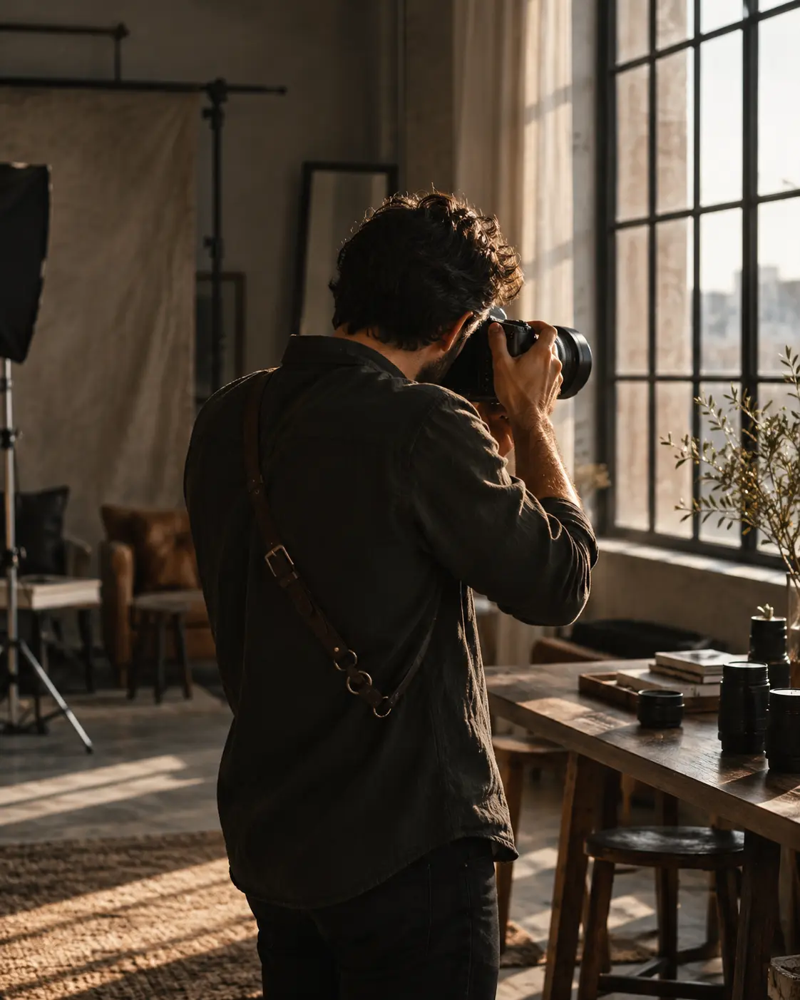

O tempo passa.
A história fica.
Fotografias para guardar o que a memória sente — os encontros, os detalhes e tudo aquilo que não se repete.
Conheça meu olharHistórias em imagens.
Escolha o tipo de fotografia para conhecer as imagens, os detalhes do pacote e o investimento.
Não é só sobre fotografar como tudo parecia. É sobre lembrar como tudo se sentia.
Mais do que fotos.
Histórias para contar.
Um espaço para quem já viveu uma experiência diante das lentes de Luckas.
RELATOS E PERSONAGENS FICTÍCIOS · CONTEÚDO ILUSTRATIVO DO PROTÓTIPO
Por trás
do olhar.
Antes de cada fotografia, existe uma história que merece ser escutada.
Luckas Oliveira fotografa pessoas, encontros, celebrações e marcas.
Esta trajetória pessoal será escrita com Luckas.
Há beleza nos detalhes e nos instantes espontâneos.
TEXTO-BASE ILUSTRATIVO · BIOGRAFIA A CONFIRMAR COM LUCKAS
Simples, do início
ao último clique.
Uma jornada tranquila, para você aproveitar o momento enquanto eu cuido das lembranças.
Uma conversa
Você conta sua ideia e alinhamos o estilo, o lugar e os detalhes do seu ensaio.
Seu momento
Um encontro sem pressa, com direção natural e espaço para ser você.
Para reviver
As imagens são selecionadas, tratadas e entregues em uma galeria digital.